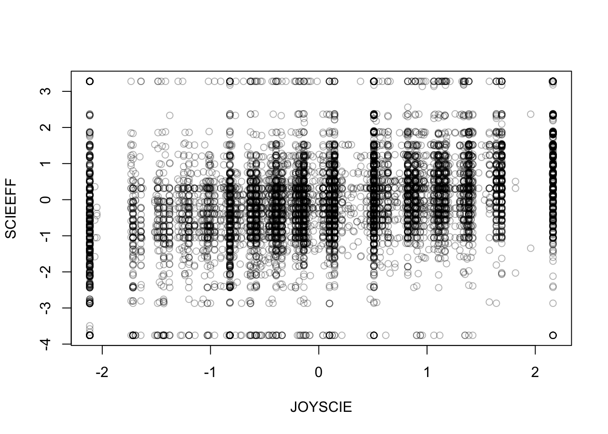

4 Wrangling big data
Data wrangling is a general term that refers to transforming data. Wrangling could involve subsetting, recoding, and transforming variables. For the workshop, we’ll also include summarizing data as wrangling as it fits within our discussion of the data.table and sparklyr packages. However, summarizing might more appropriately occur during data exploration/initial data analysis.
4.1 What is data.table?
From the data.table wiki
It is a high-performance version of base R’s
data.framewith syntax and feature enhancements for ease of use, convenience and programming speed.
Its syntax is designed to be concise and consistent. It’s somewhat similar to base R, but arguably less intuitive than tidyverse. We, and many others, would say that data.table is one of the most underrated package out there.
If you’re familiar with SQL, then working with a data.table (DT) is conceptually similar to querying.
DT[i, j, by]
R: i j by
SQL: where | order by select | update group byThis should be read as take DT, subset ( or order) rows using i, then calculate j, and group by by. A graphical depiction of this “grammar,” created by one of the developers of data.table, is shown in Figure 4.1.
Figure 4.1: Source: https://tinyurl.com/yyepwjpt.
The data.table package needs to be installed and loaded throughout the workshop.
install.packages("data.table")
library(data.table)Throughout the workshop, we will write DT code as:
DT[i,
j,
by]That is, we will use write separate lines for the i, j, and by DT statements.
4.1.1 Why use data.table over tidyverse?
If you’re familiar with R, then you might wonder why we are using DT and not tidyverse? This has to do with memory management and speed.
#
# Benchmark #1 - Reading in data
#
system.time({read.csv("data/pisa2015.csv")})
system.time({fread("data/pisa2015.csv", na.strings = "")})
system.time({read_csv("data/pisa2015.csv")})
#
# Benchmark #2 - Calculating a conditional mean
#
#' Calculate proportion that strongly agreed to an item
#' @param x likert-type item as a numeric vector
getSA <- function(x, ...) mean(x == "Strongly agree", ...)
# read in data using fread()
pisa <- fread("data/pisa2015.csv", na.strings = "")
# calculate conditional means
# This is the proportion of students in each country that
# strongly agree that
# "I want top grades in most or all of my courses."
benchmark(
"baseR" = {
X <- aggregate(ST119Q01NA ~ CNTRYID, data = pisa, getSA, na.rm = TRUE)
},
"data.table" = {
X <- pisa[,
getSA(ST119Q01NA, na.rm = TRUE),
by = CNTRYID]
},
"tidyverse" = {
X <- pisa %>%
group_by(CNTRYID) %>%
summarize(getSA(ST119Q01NA, na.rm = TRUE))
},
replications = 1000)Table 4.1 shows the results of this (relatively) unscientific minibenchmark. The first column is the method, the second column is elapsed time (in seconds) to read in the pisa data set (only once, though similar results/pattern is found if repeated), and the third column is the elapsed time (in seconds) to calculate the conditional mean 1000 times. We see that data.table is substantially faster than base R and the tidyverse.
| Method | Reading in data | Conditional mean (1000 times) |
|---|---|---|
| base R | 225.5 | 196.59 |
| data.table | 46.8 | 27.73 |
| tidyverse | 233.7 | 159.22 |
This extends to other data wrangling procedures (e.g., reshaping, recoding). Importantly, tidyverse is not designed for big data but instead for data science, more generally. From Grolemund & Wickham (2017)
“This book (R for Data Science) proudly focuses on small, in-memory datasets. This is the right place to start because you cannot tackle big data unless you have experience with small data. The tools you learn in this book will easily handle hundreds of megabytes of data, and with a little care you can typically use them to work with 1-2 Gb of data. If you are routinely working with larger data (10-100 Gb, say), you should learn more about data.table. This book does not teach data.table because it has a very concise interface which makes it harder to learn since it offers fewer linguistic cues. But if you are working with large data, the performance payoff is worth the extra effort required to learn it.”
4.2 Reading/writing data with data.table
The fread function should always be used when reading in large data sets and arguably when ever you read in a CSV file. As shown above, read.csv and readr::read_csv are painfully slow with big data.
Throughout the workshop we’ll be using the pisa data set. Therefore, we begin by reading in (or importing) the data set
pisa <- fread("data/pisa2015.csv", na.strings = "")To see the class the object pisa is and how big it is in R
class(pisa)## [1] "data.table" "data.frame"print(object.size(pisa), unit = "GB")## 3.5 GbWe see that objects that are read in with fread are of class data.table and data.frame. That means that methods for data.tables and data.frames will work on these objects. We also see this data set uses up 3.5 Gb of memory and this is all in the memory (RAM) not on the disk and allocated to memory dynamically (this is what SAS does).
If we wanted to write pisa back to a CSV to share with a colleague or to use in another program after some wrangling, then we should use the fwrite function instead of write.csv:
fwrite(pisa, file = "pisa2015.csv")Figure 4.2: Time to write an R object to a file. Source: https://tinyurl.com/y366kvfx.
In the event that you did just want to read the data in using the fread() function but then wanted to work with a tibble (tidyverse) or a data.frame, you can convert the data set after its been read in:
pisa.tib <- tibble::as_tibble(pisa)
pisa.df <- as.data.frame(pisa)However, I strongly recommend against this approach unless you have done some amount of subsetting. If your data set is large enough to benefit appreciably by fread then you should try and use the data.table package.
For the workshop, we have created two smaller versions of the pisa data set for those of you with less beefy computers. The first is a file called region6.csv and it was created by
region6 <- subset(pisa, CNT %in% c("United States", "Canada", "Mexico",
"B-S-J-G (China)", "Japan", "Korea",
"Germany", "Italy", "France", "Brazil",
"Colombia", "Uruguay", "Australia",
"New Zealand", "Jordan", "Israel", "Lebanon"))
fwrite(region6, file = "region6.csv")These are the 6 regions that will be covered during data visualization and can be used for the exercises and labs. The other file is a random sample of one country from each regions for even less powerful computers, which can also be used.
random6 <- subset(pisa, CNT %in% c("Mexico", "Uruguay", "Japan",
"Germany", "New Zealand", "Lebanon"))
fwrite(random6, file = "random6.csv")4.2.1 Exercises
- Read in the pisa data set. Either the full data set (recommended to have > 8 Gb of RAM) or one of the smaller data sets.
4.3 Using the i in data.table
One of the first things we need to do when data wrangling is subsetting. Subsetting with data.table is very similar to base R but not identical. For example, if we wanted to subset all the students from Mexico who are currently taking Physics, i.e., they checked the item “Which
pisa[CNTRYID == "Mexico" & ST063Q01NA == "Checked"]
# or (identical to base R)
subset(pisa, CNTRYID == "Mexico" & ST063Q01NA == "Checked")Note that with data.table we do not need to use the $ operator to access a variable in a data.table object. This is one improvement to the syntax of a data.frame.
Typing the name of a data.table won’t print all the rows by default like a data.frame. Instead it prints just the first and last 5 rows.
pisaThis is extremely helpful because when we have a object in R, it often defaults to printing the entire object and this has the negative consequence of endless output if we type just the name of a very large object.
Because we have 921 variables, data.table will still truncate this output. If we want to view just the rows 10 through 25.
pisa[10:25]However, with this many columns it is useless to print all of them and instead we should focus on examining just the columns we’re interested in and we will see how to do this when we examine the j operator.
Often when data wrangling we would like to perform multiple steps without needing to create intermediate variables. This is known as chaining. Chaining can be done in data.table via
DT[ ...
][ ...
][ ...
]For example, if we wanted to just see rows 17 through 20 after we’ve done previous subset, we can chain together these commands:
pisa[CNTRYID == "Mexico" & ST063Q01NA == "Checked"
][17:20]When we’re wrangling data, it’s common and quite helpful to reorder rows. This can be done using the order() function. First, we print the first 6 six elements of the CNTRYID using the default ordering in the pisa data. Then we reorder the data by country name in a descending order and then print the first 6 six elements again using chaining.
head(pisa$CNTRYID)## [1] "Albania" "Albania" "Albania" "Albania" "Albania" "Albania"pisa[order(CNTRYID, decreasing = TRUE)
][,
head(CNTRYID)]## [1] "Vietnam" "Vietnam" "Vietnam" "Vietnam" "Vietnam" "Vietnam"4.3.1 Exercises
- Subset all the Female students (ST004D01T) in Germany
- How many female students are there in Germany?
- The
.Nfunction returns the length of a vector/number of rows. Use chaining with the.Nfunction to answer Exercise 2.
4.4 Using the j in data.table
Using j we can select columns, summarize variables by performing actions on the variables, and create new variables. If we wanted to just select the country identifier:
pisa[,
CNTRYID]However, this returns a vector not a data.table. If we wanted instead to return a data.table:
pisa[,
list(CNTRYID)]## CNTRYID
## 1: Albania
## 2: Albania
## 3: Albania
## 4: Albania
## 5: Albania
## ---
## 519330: Argentina (Ciudad Autónoma de Buenos)
## 519331: Argentina (Ciudad Autónoma de Buenos)
## 519332: Argentina (Ciudad Autónoma de Buenos)
## 519333: Argentina (Ciudad Autónoma de Buenos)
## 519334: Argentina (Ciudad Autónoma de Buenos)pisa[,
.(CNTRYID)]## CNTRYID
## 1: Albania
## 2: Albania
## 3: Albania
## 4: Albania
## 5: Albania
## ---
## 519330: Argentina (Ciudad Autónoma de Buenos)
## 519331: Argentina (Ciudad Autónoma de Buenos)
## 519332: Argentina (Ciudad Autónoma de Buenos)
## 519333: Argentina (Ciudad Autónoma de Buenos)
## 519334: Argentina (Ciudad Autónoma de Buenos)The .() is data.table shorthand for list(). To subset more than one variable, we can just add another variable within the .(). For example, if we also wanted to select the science self-efficacy scale (SCIEEFF) as well, we do the following:
pisa[,
.(CNTRYID, SCIEEFF)]## CNTRYID SCIEEFF
## 1: Albania NA
## 2: Albania NA
## 3: Albania NA
## 4: Albania NA
## 5: Albania NA
## ---
## 519330: Argentina (Ciudad Autónoma de Buenos) -0.8799
## 519331: Argentina (Ciudad Autónoma de Buenos) 0.9802
## 519332: Argentina (Ciudad Autónoma de Buenos) -0.5696
## 519333: Argentina (Ciudad Autónoma de Buenos) -0.7065
## 519334: Argentina (Ciudad Autónoma de Buenos) -0.3609If we wanted see how many students took physics in Japan and Mexico, we would do the following:
pisa[CNTRYID %in% c("Mexico", "Japan"),
table(ST063Q01NA)]## ST063Q01NA
## Checked Not checked
## 4283 9762Because data.table treats string variables as character variables by default we see that when they are printed they are printed alphabetically, which in this case is fine but is often unhelpful. We can chain together variables and create an intermediate tense variable to get this in the correct format. However, when we want to know how students in Mexico and Japan responded to “I get very tense when I study for a test.”
pisa[CNTRYID %in% c("Mexico", "Japan"),
table(ST118Q04NA)]## ST118Q04NA
## Agree Disagree Strongly agree Strongly disagree
## 4074 5313 1760 2904We see that the output is unhelpful. Instead, we should convert the character vector into a factor and we will create an intermediate variable called tense, which we won’t add to our data set.
pisa[CNTRYID %in% c("Mexico", "Japan"),
.(tense = factor(ST118Q04NA, levels = c("Strongly disagree", "Disagree", "Agree", "Strongly agree")))
][,
table(tense)
]## tense
## Strongly disagree Disagree Agree Strongly agree
## 2904 5313 4074 1760Quick digression, in case you were wondering why base R reads strings in as factors and not characters by default (which data.table and readr::read_csv do),
pisa[, .(tense.as.char = ST118Q04NA,
tense.as.fac = factor(ST118Q04NA, levels = c("Strongly disagree", "Disagree", "Agree", "Strongly agree")))
][,
.(character = object.size(tense.as.char),
factor = object.size(tense.as.fac))
]## character factor
## 1: 4154984 bytes 2078064 bytesReturning to the science self-efficacy scale, we can request summary information for just these two countries:
pisa[CNTRYID %in% c("Mexico","Japan"),
.(xbar = mean(SCIEEFF, na.rm = T),
sigma = sd(SCIEEFF, na.rm = T),
minimum = min(SCIEEFF, na.rm = T),
med = median(SCIEEFF, na.rm = T),
maximum = max(SCIEEFF, na.rm = T))]## xbar sigma minimum med maximum
## 1: -0.08694 1.216 -3.756 -0.0541 3.277We can create a quick plot this way, too. For example, if we wanted a create a scatter plot of the science self-efficacy scale against the enjoyment of science scale (JOYSCIE) for just these two countries and print the mean of the enjoyment of science scale, we can do the following:
pisa[CNTRYID %in% c("Mexico","Japan"),
.(plot(y = SCIEEFF, x = JOYSCIE,
col = rgb(red = 0, green = 0, blue = 0, alpha = 0.3)),
xbar.joyscie = mean(JOYSCIE, na.rm = T))]
## xbar.joyscie
## 1: 0.0614This example is kind of silly but it shows that j is incredibly flexible and that we can string together a bunch of commands using j without even needing to do chaining.
Let’s say we need to recode “After leaving school did you: Eat dinner” from a character variable to a numeric variable. We can do this with a series of if else statements
table(pisa$ST078Q01NA)##
## No Yes
## 23617 373131pisa[,
"eat.dinner" := sapply(ST078Q01NA,
function(x) {
if (is.na(x)) NA
else if (x == "No") 0L
else if (x == "Yes") 1L
})
][,
table(eat.dinner)
]## eat.dinner
## 0 1
## 23617 373131In this example we created a new variable called eat.dinner using := the function. The := syntax adds this variable directly to the DT. We also specified the L to ensure the variable was treated as an integer and not a double, which uses less memory.
We should create a function to do this recoding as there are lots of dichotomous items in the pisa data set.
#' Convert a dichtomous item (yes/no) to numeric scoring
#' @param x a character vector containing "Yes" and "No" responses.
bin.to.num <- function(x){
if (is.na(x)) NA
else if (x == "Yes") 1L
else if (x == "No") 0L
}Then use this function to create some variables as well as recoding gender to give it a more intuitive variable name.
pisa[, `:=`
(female = ifelse(ST004D01T == "Female", 1, 0),
sex = ST004D01T,
# At my house we have ...
desk = sapply(ST011Q01TA, bin.to.num),
own.room = sapply(ST011Q02TA, bin.to.num),
quiet.study = sapply(ST011Q03TA, bin.to.num),
computer = sapply(ST011Q04TA, bin.to.num),
software = sapply(ST011Q05TA, bin.to.num),
internet = sapply(ST011Q06TA, bin.to.num),
lit = sapply(ST011Q07TA, bin.to.num),
poetry = sapply(ST011Q08TA, bin.to.num),
art = sapply(ST011Q09TA, bin.to.num),
book.sch = sapply(ST011Q10TA, bin.to.num),
tech.book = sapply(ST011Q11TA, bin.to.num),
dict = sapply(ST011Q12TA, bin.to.num),
art.book = sapply(ST011Q16NA, bin.to.num))]Similarly, we can create new variables by combining pre-existing ones. In the later data visualization section, we will use the following variables, so we will create them now. The rowMeans function takes a data.frame, so we need to subset the variables from the pisa data set and then convert it to a data.frame. This is what the brackets are doing.
pisa[, `:=`
(math = rowMeans(pisa[, c(paste0("PV", 1:10, "MATH"))], na.rm = TRUE),
reading = rowMeans(pisa[, c(paste0("PV", 1:10, "READ"))], na.rm = TRUE),
science = rowMeans(pisa[, c(paste0("PV", 1:10, "SCIE"))], na.rm = TRUE))]4.4.1 Exercises
The computer and software variables that were created above ask a student whether they had a computer in their home that they can use for school work (computer) and whether they had educational software in their home (software). Find the proportion of students in the Germany and Uruguay that have a computer in their home or have educational software.
For just female students, find the proportion of students who have their own room (own.room) or a quiet place to study (quiet.study).
4.5 Summarizing using the by in data.table
With the by argument, we can now get conditional responses without the need to subset. If we want to know the proportion of students in each country that have their own room at home.
pisa[,
.(mean(own.room, na.rm = TRUE)),
by = .(CNTRYID)
][1:6,
]## CNTRYID V1
## 1: Albania NaN
## 2: Algeria 0.5188
## 3: Australia 0.9216
## 4: Austria 0.9054
## 5: Belgium 0.9154
## 6: Brazil 0.7498Again, we can reorder this using chaining:
pisa[,
.(own.room = mean(own.room, na.rm = TRUE)),
by = .(country = CNTRYID)
][order(own.room, decreasing = TRUE)
][1:6
]## country own.room
## 1: Iceland 0.9863
## 2: Netherlands 0.9750
## 3: Norway 0.9738
## 4: Sweden 0.9559
## 5: Finland 0.9441
## 6: Germany 0.9379What if we want to compare just the Canada and Iceland on the proportion of students that have books of poetry at home (poetry) or and their mean on the enjoyment of science by student’s biological sex?
pisa[CNTRYID %in% c("Canada", "Iceland"),
.(poetry = mean(poetry, na.rm = TRUE),
enjoy = mean(JOYSCIE, na.rm = TRUE)),
by = .(country = CNTRYID, sex = sex)]## country sex poetry enjoy
## 1: Canada Female 0.3632 0.29636
## 2: Canada Male 0.3124 0.40950
## 3: Iceland Female 0.7281 0.03584
## 4: Iceland Male 0.7011 0.30316We see a strong country effect on poetry at home, with > 70% of Icelandic students reporting poetry books at home and just above 30% in Canadian students and we see that Canadian students enjoy science more than Icelandic students and, male students, overall, enjoy science more than females.
Let’s examine books of poetry at home by countries and sort it in descending order.
pisa[,
.(poetry = mean(poetry, na.rm = TRUE)),
by = .(country = CNTRYID)
][order(poetry, decreasing = TRUE)
][1:6
]## country poetry
## 1: Kosovo 0.8353
## 2: Russian Federation 0.8046
## 3: Romania 0.8019
## 4: Georgia 0.7496
## 5: B-S-J-G (China) 0.7442
## 6: Estonia 0.7423Iceland is in the top 10, while Canada is 59.
We can also write more complex functions and provide these to data.table. For example, if wanted to fit a regression model to predict a student’s score on science self-efficacy scale given their score on the enjoyment of science scale and their sex for just the G7 countries (Canada, France, Germany, Italy, Japan, the United Kingdom, and the United States), we can fit a multiple regression model and return the intercept and slope terms.
get.params <- function(cntry){
mod <- lm(SCIEEFF ~ JOYSCIE + sex, cntry)
est.params <- list(int = coef(mod)[[1]], enjoy.slope = coef(mod)[[2]], sex.slope = coef(mod)[[3]])
return(est.params)
}
g7.params <- pisa[CNTRYID %in% c("Canada", "France", "Germany", "Italy",
"Japan", "United Kingdom", "United States"),
get.params(.SD),
by = .(CNTRYID)]
g7.params## CNTRYID int enjoy.slope sex.slope
## 1: Canada 0.009803357 0.4370945 0.21489577
## 2: France -0.208698984 0.4760903 0.17743126
## 3: Germany -0.019150031 0.4316565 0.17971821
## 4: Italy -0.030880063 0.3309990 0.18831666
## 5: Japan -0.353806055 0.3914385 0.04912039
## 6: United Kingdom 0.009711647 0.5182592 0.18981965
## 7: United States 0.096920721 0.3907848 0.15022008We see a fair bit of variability in these estimated parameters
4.5.1 Exercises
Calculate the proportion of students who have art in their home (art) and the average age (AGE) of the students by gender.
Within a by argument you can discretize a variable to create a grouping variable. Perform a median split for age within the by argument and assess whether there are age difference associated with having your own room (own.room) or a desk (desk).
4.6 Reshaping data
The data.table package provides some very fast methods to reshape data from wide (the current format) to long format. In long format, a single test taker will correspond to multiple rows of data. Some software and R packages require data to be in long format (e.g., lme4 and nlme).
Let’s begin by creating a student ID and then subsetting this ID and the at-home variables:
pisa$id <- 1:nrow(pisa)
athome <- subset(pisa, select = c(id, desk:art.book))To transform the data to long format we melt the data.
athome.l <- melt(athome,
id.vars = "id",
measure.vars = c("desk", "own.room", "quiet.study", "lit",
"poetry", "art", "book.sch", "tech.book",
"dict", "art.book"))
athome.l## id variable value
## 1: 1 desk NA
## 2: 2 desk NA
## 3: 3 desk NA
## 4: 4 desk NA
## 5: 5 desk NA
## ---
## 5193336: 519330 art.book 1
## 5193337: 519331 art.book 0
## 5193338: 519332 art.book 1
## 5193339: 519333 art.book 0
## 5193340: 519334 art.book 0We could have also allowed melt() to guess the format:
athome.guess <- melt(athome)## Warning in melt.data.table(athome): id.vars and measure.vars are internally
## guessed when both are 'NULL'. All non-numeric/integer/logical type columns are
## considered id.vars, which in this case are columns []. Consider providing at
## least one of 'id' or 'measure' vars in future.athome.guess## variable value
## 1: id 1
## 2: id 2
## 3: id 3
## 4: id 4
## 5: id 5
## ---
## 7270672: art.book 1
## 7270673: art.book 0
## 7270674: art.book 1
## 7270675: art.book 0
## 7270676: art.book 0It guessed incorrectly. If id was set as a character vector, then it would have guessed correctly this time. However, you should not allow it to guess the names of the variables.
To go back to wide format we use the dcast() function.
athome.w <- dcast(athome.l,
id ~ variable)Unlike other reshaping packages, data.table can also handle reshaping multiple outcomes variables. More about reshaping with data.table is available here.
4.7 The sparklyr package
The sparklyr package provides an R interface to Apache Spark and a complete dplyr backend. Apache Spark “is a unified analytics engine for big data processing, with built-in modules for streaming, SQL, machine learning and graph processing.” Apache Spark can also be interfaced using the sparkR package provided by Apache. See here and here for more details.
To use Apache Spark you will need Java 8 JDK installed. It can be installed here. To begin with you need to install sparklyr and dplyr.
install.packages("sparklyr")
install.packages("dplyr")
library("sparklyr")
library("dplyr")We then need to install Spark, which we can do from R.
spark_install()Next, we need to setup a connection with Spark and we’ll be connecting to a local install of Spark.
sc <- spark_connect(master = "local")Then we need to copy the pisa data set to the Spark cluster. However, with this large of a data set, this is a bad idea. We will run into memory issues during the copying process. So, we’ll first subset the data before we do this.
pisa_sub <- subset(pisa, CNTRYID %in% c("Canada", "France", "Germany",
"Italy", "Japan", "United Kingdom",
"United States"),
select = c("DISCLISCI", "TEACHSUP", "IBTEACH", "TDTEACH",
"ENVAWARE", "JOYSCIE", "INTBRSCI", "INSTSCIE",
"SCIEEFF", "EPIST", "SCIEACT", "BSMJ", "MISCED",
"FISCED", "OUTHOURS", "SMINS", "TMINS",
"BELONG", "ANXTEST", "MOTIVAT", "COOPERATE",
"PERFEED", "unfairteacher", "HEDRES", "HOMEPOS",
"ICTRES", "WEALTH", "ESCS", "math", "reading",
"CNTRYID", "sex"))We will use the selected variables in the labs and a description of these variables can be seen below.
Now the data are ready to be copied into Spark.
pisa_tbl <- copy_to(sc, pisa_sub, overwrite = TRUE)In tidyverse, you can use the %>% to chain together commands or to pass data to functions. With sparklyr, we can use the filter function instead of subset. For example, if we just want to see the female students’ scores on these scales for Germany, we would do the following:
pisa_tbl %>%
filter(CNTRYID == "Germany" & sex == "Female")## # Source: spark<?> [?? x 32]
## DISCLISCI TEACHSUP IBTEACH TDTEACH ENVAWARE JOYSCIE INTBRSCI INSTSCIE SCIEEFF
## <dbl> <dbl> <dbl> <dbl> <dbl> <dbl> <dbl> <dbl> <dbl>
## 1 -0.234 -0.804 -0.608 -0.867 -0.536 -0.821 -0.550 NA NA
## 2 0.283 0.488 -0.157 -0.685 -0.805 -2.12 -1.13 -1.93 -2.83
## 3 0.700 1.45 0.988 0.525 0.171 -1.72 -0.225 -0.718 -2.09
## 4 0.0039 0.568 0.209 -0.0742 -0.234 -0.821 -0.0831 -0.826 -0.426
## 5 0.763 -0.450 0.535 -0.0057 -0.479 0.613 0.198 -0.304 -0.713
## 6 0.660 -0.461 0.647 0.450 -0.706 -0.631 -0.551 -1.93 -0.596
## 7 0.288 -1.82 0.430 -1.32 -0.0217 -0.576 -0.566 -0.670 0.748
## 8 0.835 -1.07 0.89 -0.610 0.256 2.16 0.341 1.33 -0.0804
## 9 1.32 -0.246 0.257 -0.867 -0.685 -0.152 -0.509 -0.778 -1.42
## 10 1.32 -1.29 0.308 -0.790 -0.385 -1.61 -0.399 -1.93 -1.05
## # ... with more rows, and 23 more variables: EPIST <dbl>, SCIEACT <dbl>,
## # BSMJ <int>, MISCED <chr>, FISCED <chr>, OUTHOURS <int>, SMINS <int>,
## # TMINS <int>, BELONG <dbl>, ANXTEST <dbl>, MOTIVAT <dbl>, COOPERATE <dbl>,
## # PERFEED <dbl>, unfairteacher <int>, HEDRES <dbl>, HOMEPOS <dbl>,
## # ICTRES <dbl>, WEALTH <dbl>, ESCS <dbl>, math <dbl>, reading <dbl>,
## # CNTRYID <chr>, sex <chr>You’ll notice the at the top it says #Source: spark<?>
If we wanted to calculate the average disciplinary climate in science classes (DISCLISCI) by country and by sex and have it reorder by country than sex, we can do the following:
pisa_tbl %>%
group_by(CNTRYID, sex) %>%
summarize(ave_disclip = mean(DISCLISCI, na.rm = TRUE)) %>%
arrange(CNTRYID, sex)## # Source: spark<?> [?? x 3]
## # Groups: CNTRYID
## # Ordered by: CNTRYID, sex
## CNTRYID sex ave_disclip
## <chr> <chr> <dbl>
## 1 Canada Female 0.0110
## 2 Canada Male -0.0205
## 3 France Female -0.236
## 4 France Male -0.297
## 5 Germany Female 0.0915
## 6 Germany Male 0.0162
## 7 Italy Female 0.0708
## 8 Italy Male -0.137
## 9 Japan Female 0.916
## 10 Japan Male 0.788
## # ... with more rowsWe can also create new variables using the mutate function. If we want to get a measure of home affluence, we could add home educational resources (HEDRES) and home possessions (HOMEPOS)
pisa_tbl %>%
mutate(totl_home = HEDRES + HOMEPOS) %>%
group_by(CNTRYID) %>%
summarize(xbar = mean(totl_home, na.rm = TRUE))## # Source: spark<?> [?? x 2]
## CNTRYID xbar
## <chr> <dbl>
## 1 United Kingdom 0.370
## 2 United States 0.113
## 3 Italy 0.324
## 4 Japan -1.30
## 5 France -0.332
## 6 Germany 0.279
## 7 Canada 0.430On my computer, the Spark code is slightly faster than data.table, but not by much. The real power of using Spark is that we can use its machine learning functions. However, if you’re familiar with tidyverse (dplyr) syntax, then sparklyr is a package that is worth investigating for data wrangling with big data sets.
4.8 Lab
This afternoon when we discuss supervised learning, we’ll ask you to develop some models to predict the response to the question Do you expect your child will go into a
Recode this variable so that a “Yes” is 1 and a “No” is a -1 and save the variable as
sci_car.Calculate descriptives for this variable by sex and country. Specifically, the proportion of test takers whose parents said “Yes” or 1.
After you’ve done this, spend some time investigating the following variables
| Label | Description |
|---|---|
| DISCLISCI | Disciplinary climate in science classes (WLE) |
| TEACHSUP | Teacher support in a science classes of students choice (WLE) |
| IBTEACH | Inquiry-based science teaching an learning practices (WLE) |
| TDTEACH | Teacher-directed science instruction (WLE) |
| ENVAWARE | Environmental Awareness (WLE) |
| JOYSCIE | Enjoyment of science (WLE) |
| INTBRSCI | Interest in broad science topics (WLE) |
| INSTSCIE | Instrumental motivation (WLE) |
| SCIEEFF | Science self-efficacy (WLE) |
| EPIST | Epistemological beliefs (WLE) |
| SCIEACT | Index science activities (WLE) |
| BSMJ | Student’s expected occupational status (SEI) |
| MISCED | Mother’s Education (ISCED) |
| FISCED | Father’s Education (ISCED) |
| OUTHOURS | Out-of-School Study Time per week (Sum) |
| SMINS | Learning time (minutes per week) - |
| TMINS | Learning time (minutes per week) - in total |
| BELONG | Subjective well-being: Sense of Belonging to School (WLE) |
| ANXTEST | Personality: Test Anxiety (WLE) |
| MOTIVAT | Student Attitudes, Preferences and Self-related beliefs: Achieving motivation (WLE) |
| COOPERATE | Collaboration and teamwork dispositions: Enjoy cooperation (WLE) |
| PERFEED | Perceived Feedback (WLE) |
| unfairteacher | Teacher Fairness (Sum) |
| HEDRES | Home educational resources (WLE) |
| HOMEPOS | Home possessions (WLE) |
| ICTRES | ICT Resources (WLE) |
| WEALTH | Family wealth (WLE) |
| ESCS | Index of economic, social and cultural status (WLE) |
| math | Students’ math score in PISA 2015 |
| reading | Students’ reading score in PISA 2015 |
and then do the following using data.table and/or sparklyr:
Means and standard deviations (
sd) for the variables that you think will be most predictive ofsci_car.Calculate these same descriptives by groups (by
sci_carand bysex).Calculate correlations between these variables and
sci_car,Create new variables
- Discretize the math and reading variables using the OECD means (490 for math and 493) and code them as 1 (at or above the mean) and -1 (below the mean), but do in the
data.tableway without using the$operator. - Calculate the correlation between these variables and the list of variables above.
- Discretize the math and reading variables using the OECD means (490 for math and 493) and code them as 1 (at or above the mean) and -1 (below the mean), but do in the
Chain together a set of operations
- For example, create an intermediate variable that is the average of JOYSCIE and INTBRSCI, and then calculate the mean by country by
sci_carthrough chaining.
- For example, create an intermediate variable that is the average of JOYSCIE and INTBRSCI, and then calculate the mean by country by
Transform variables, specifically recode MISCED and FISCED from characters to numeric variables.
Examine other variables in the pisa data set that you think might be predictive of
PA032Q03TA.